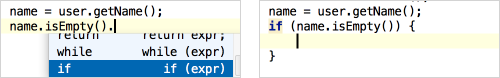

Postfix code completion is applied "from right to left" and lets you avoid backward caret jumps when coding. After the code fragment that you want to change, type a dot (.), optionally press &shortcut:InsertLiveTemplate; and select the desired option.
